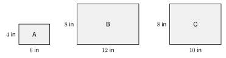
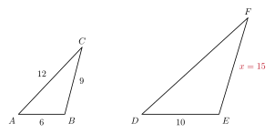
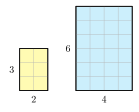

5.2 Similar Figures and Scale Factor
- Decide whether two figures are similar
- Write a similarity statement and match corresponding parts
- Use a scale factor to find missing sides
- Find the perimeter and area of a similar figure
Warm-Up
1. Solve x6 = 104.
4x = 60, so x = 15
2. A segment is 8 cm long. A dilation with scale factor 2.5 is applied. How long is the image?
8 · 2.5 = 20 cm
3. Find the area and perimeter of a rectangle that is 5 in by 3 in.
Area: 5 · 3 = 15 square in. Perimeter: 2(5 + 3) = 16 in.
5.2.1What Similar Means
- Figures are similar if they have the same shape but maybe a different size.
- Write "is similar to" with the symbol ∼.
- In similar figures, corresponding angles are equal.
- In similar figures, corresponding sides are proportional. Their ratios are all the same.

Match the shortest sides, the middle sides, and the longest sides.
DEAB = 64 = 1.5
EFBC = 96 = 1.5
FDCA = 128 = 1.5
All three ratios are 1.5. The sides are proportional, and the angles match. The triangles are similar.
105 = 2, 147 = 2, 189 = 2. Yes, the ratios are all 2.
5.2.2Similarity Statements and Scale Factor
- The statement △ ABC ∼ △ DEF means A matches D, B matches E, and C matches F.
- The scale factor k is the ratio of a side in the new figure to the matching side in the old figure.
- Going the other way, the scale factor is the reciprocal of k.
- If k > 1 the new figure is larger. If k < 1 it is smaller.
a. Write the similarity statement and name the side that matches BC.
b. Find the scale factor from △ ABC to △ DEF.
c. Find the scale factor from △ DEF to △ ABC.
a. △ ABC ∼ △ DEF. Side BC matches EF.
b. k = DEAB = 64 = 1.5. The new triangle is larger.
c. k = ABDE = 46 = 23. The new triangle is smaller.
The two scale factors are reciprocals. 1.5 · 23 = 1.
b. JK = 10 and MN = 4. Find the scale factor from △ JKL to △ MNP.your turn
a. ∠P
b. k = MNJK = 410 = 25 = 0.4
5.2.3Are Two Figures Similar?
- To test two polygons, check that all the angles match and that all the side ratios are equal.
- Equal angles alone are not enough for figures with more than three sides.
- To show a claim is not always true, give a counterexample.
a. Are photos A and B similar?
b. Are photos A and C similar?

a. Short sides: 84 = 2. Long sides: 126 = 2. The ratios are equal. Yes, A and B are similar, with k = 2.
b. Short sides: 84 = 2. Long sides: 106 ≈ 1.67. The ratios are not equal. No.
Photos A and C have equal angles, but they are not similar. This is a counterexample to the claim "rectangles with equal angles are similar."
96 = 1.5 and 1510 = 1.5. Yes, they are similar and k = 1.5.
5.2.4Find a Missing Side
- Set up a proportion with matching sides in the same positions.
- Solve it with cross products.
- Or find k first, then multiply the old side by k.

AB matches DE. BC matches EF.
ABDE = BCEF, so 610 = 9x.
6x = 90, so x = 15.
Check with k: k = 106 = 53 and 9 · 53 = 15.
812 = 14x, so 8x = 168 and x = 21.
ABDE = BCEF, so 615 = x + 45x.
6 · 5x = 15(x + 4)
30x = 15x + 60
15x = 60, so x = 4.
EF = 5(4) = 20.
Check: BC = 8, and 820 = 0.4 = 615.
820 = x + 13x + 1, so 8(3x + 1) = 20(x + 1).
24x + 8 = 20x + 20, so 4x = 12 and x = 3.
5.2.5Perimeter and Area
- If the scale factor is k, the perimeters have ratio k.
- The areas have ratio k2.
- If k = 3, the perimeter is multiplied by 3 and the area by 9.

Small perimeter: 3 + 4 + 5 = 12 in.
Large perimeter: 3 · 12 = 36 in.
Large area: 32 · 6 = 9 · 6 = 54 square in.
Check: the large sides are 9, 12, 15. 9 + 12 + 15 = 36.
Small perimeter: 12 cm, so large: 60 cm.
Small area: 8 square cm, so large: 25 · 8 = 200 square cm.
1. Similar figures have equal corresponding angles and proportional sides.
2. In △ ABC ∼ △ DEF, the order of the letters shows which parts match.
3. The scale factor is the new length divided by the old length.
4. Equal angles are not enough for a rectangle. A counterexample shows it.
5. If the scale factor is k, perimeters change by k and areas change by k2.
Practice
Are the photos similar? Write yes or no. If yes, give k from the small photo to the large one
1. 4 in by 6 in and 12 in by 18 in Yes, k = 3
2. 5 in by 7 in and 10 in by 12 in No. 105 = 2 but 127 ≈ 1.71
3. 8 in by 10 in and 16 in by 20 in Yes, k = 2
4. 3 in by 5 in and 9 in by 12 in No. 93 = 3 but 125 = 2.4
△ ABC ∼ △ XYZ. Complete each match
5. ∠B matches ∠Y
6. BC matches YZ
7. ∠Z matches ∠C
8. AC matches XZ
Find the scale factor
9. △ JKL ∼ △ MNP. JK = 9 and MN = 6. Find k from △ JKL to △ MNP.
k = 69 = 23
10. Use the triangles in problem 9. Find k from △ MNP to △ JKL.
k = 96 = 32
11. A side of 12 cm becomes 30 cm in a similar figure. Find k.
k = 3012 = 2.5
12. A side of 20 in becomes 5 in in a similar figure. Find k. Is the new figure larger or smaller?
k = 520 = 14. Smaller.
Find the missing length
13. △ ABC ∼ △ DEF. AB = 10, DE = 15, and BC = 14. Find EF.
1015 = 14x, so 10x = 210 and EF = 21
14. △ ABC ∼ △ DEF. AB = 12, DE = 9, and AC = 20. Find DF.
129 = 20x, so 12x = 180 and DF = 15
15. Rectangle ABCD ∼ rectangle EFGH. AB = 6, BC = 9, and EF = 10. Find FG.
610 = 9x, so 6x = 90 and FG = 15
16. △ ABC ∼ △ DEF. AB = 9, DE = 6, BC = x + 3, and EF = x. Find x.
96 = x + 3x, so 9x = 6x + 18 and x = 6
17. △ ABC ∼ △ DEF. AB = x + 2, DE = 3x − 1, BC = 10, and EF = 20. Find x and DE.
x + 23x − 1 = 1020, so 2(x + 2) = 3x − 1 and x = 5. DE = 14.
Real problems
18. A phone screen is 3 in wide and 6.5 in tall. A similar tablet screen is 4.5 in wide. How tall is the tablet screen?
34.5 = 6.5h, so 3h = 29.25 and h = 9.75 in
19. A model car has the scale 1 : 24. The real car is 15 feet long. How long is the model in inches?
15 ft = 180 in. 180 ÷ 24 = 7.5 in
20. The model car in problem 19 is 3 inches wide. How wide is the real car in feet?
3 · 24 = 72 in = 6 ft
Perimeter and area
21. Two similar figures have k = 4. The small figure has perimeter 9 cm. Find the perimeter of the large figure.
4 · 9 = 36 cm
22. The small figure in problem 21 has area 5 square cm. Find the area of the large figure.
42 · 5 = 80 square cm
23. A large triangle is similar to a small triangle. The scale factor from large to small is k = 12. The large triangle has perimeter 30 in and area 48 square in. Find the perimeter and area of the small triangle.
Perimeter: 12 · 30 = 15 in. Area: (12)2 · 48 = 12 square in.
24. Diego says, "If I double the sides of a square, its area doubles." Find his mistake. Use a square with side 3.
The area of a square with side 3 is 9. With side 6 it is 36. The area is 22 = 4 times as large, not 2 times.
25. Two similar rectangles have areas 9 square in and 49 square in. The small one has perimeter 24 in. Find the perimeter of the large one.
k2 = 499, so k = 73. Perimeter: 73 · 24 = 56 in
Shows or suggests? Explain
26. Ana says, "All rectangles are similar because all of their angles are 90°." Give a counterexample.
A 2 by 4 rectangle and a 2 by 6 rectangle. 22 = 1 but 64 = 1.5. The ratios are not equal, so they are not similar.
27. A rhombus has four equal sides and angles of 60° and 120°. A square has four equal sides. All the side ratios are equal. Are the two figures similar?
No. The angles do not match. A square has four 90° angles.
Test Practice
28. △ ABC ∼ △ DEF. AB = 6 and DE = 15. The perimeter of △ ABC is 20. What is the perimeter of △ DEF?
A. 8
B. 35
C. 50 ← correct
D. 125
29. Two similar figures have scale factor 3 from the small figure to the large one. The area of the small figure is 12 square feet. What is the area of the large figure?
A. 36 square feet
B. 108 square feet ← correct
C. 72 square feet
D. 324 square feet
Challenge
30. A photo is 4 in by 6 in. An enlargement has twice the area and the same shape. Find k to the nearest hundredth. Then find the new width and length to the nearest tenth of an inch.
The area is multiplied by 2, so k2 = 2 and k = √2 ≈ 1.41. The new sides are 4 · 1.414 ≈ 5.7 in and 6 · 1.414 ≈ 8.5 in.